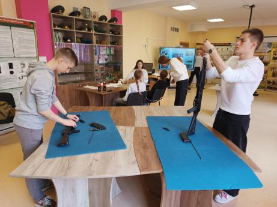
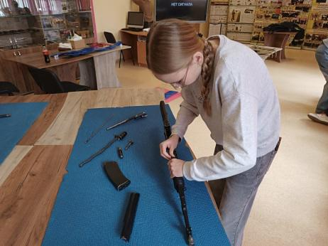
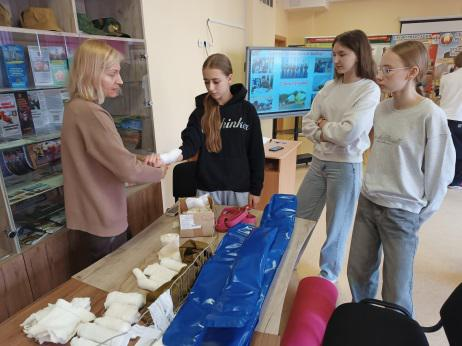
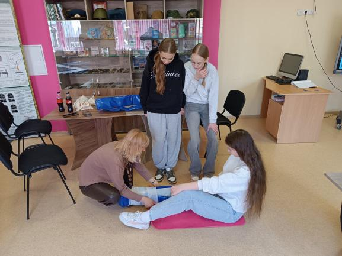
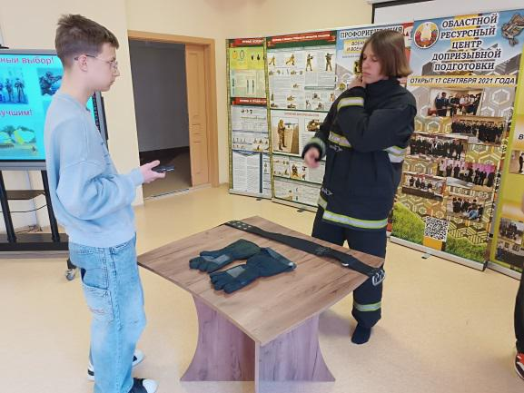
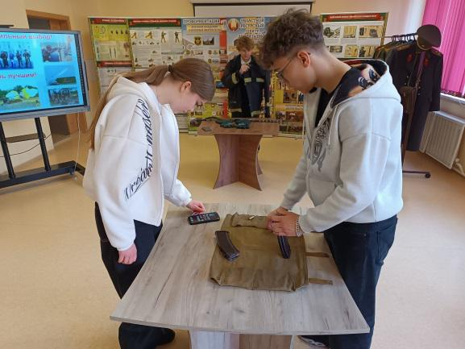

ТОЛЬКО КРОПОТЛИВЫМ ТРУДОМ МОЖНО ДОБИТЬСЯ РЕЗУЛЬТАТА
Эта фраза стала девизом команды гимназии «Патриот», участницы военно-патриотической игры «Орленок». На протяжении нескольких недель ребята отрабатывают строевые приемы, тренируются в надевании боёвки, неполной разборки и сборки автомата Калашникова, снаряжении и разряжении магазина патронами, оказании первой помощи пострадавшим.



Так, 18 апреля юнармейцы посетили ресурсный центр допризывной подготовки, где занятия проходили под руководством заведующей центра Татьяны Журавель.
Также хочется отметить участие в подготовки команды учащегося 11 «Г» класса Егора Стаднего, который под эгидой Борисовской районной организации Республиканского общественного объединения «Белорусское Общество Красного Креста» обучил юнармейцев практическим приемам оказания первой помощи и вооружил их теоретическими знаниями по ее оказанию в разных ситуациях.


